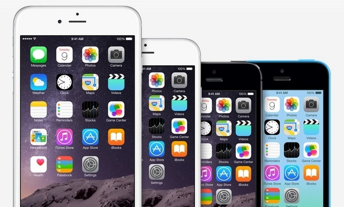

Apple
Apple Inc. (anteriormente Apple Computer, Inc.) é uma empresa multinacional norte-americana que tem o objetivo de projetar e comercializar produtos eletrônicos de consumo, software de computador e computadores pessoais. Os produtos de hardware mais conhecidos da empresa incluem a linha de computadores Macintosh, iPod, iPhone, iPad, Apple TV e o Apple Watch. Os softwares incluem o sistema operacional macOS, o navegador de mídia iTunes, suíte de software multimídia e criatividade iLife, suíte de software de produtividade iWork, Aperture, um pacote de fotografia profissional, Final Cut Studio, uma suíte de vídeo profissional, produtos de software, Lógica Studio, um conjunto de ferramentas de produção musical, navegador Safari e o iOS, um sistema operacional móvel.
Fundada em 1 de abril de 1976 em Cupertino, Califórnia, e incorporada 3 de janeiro de 1977, a empresa foi anteriormente denominada Apple Computer, Inc. nos seus primeiros 30 anos, mas retirou a palavra "Computer" em 9 de janeiro de 2007, para refletir a contínua expansão da empresa no mercado de eletrônicos de consumo, além de seu foco tradicional em computadores pessoais. Em setembro de 2010, a Apple tinha 46,6 mil empregados em tempo integral e 2.800 temporários empregados em tempo integral em todo o mundo e tinha vendas anuais mundiais de 65,23 bilhões de dólares.
Iphone
Anunciado em 9 de janeiro de 2007, o iPhone foi lançado no dia 29 de junho de 2007 nos EUA, em 9 de Novembro de 2007 na Alemanha e no Reino Unido, e em 29 de Novembro na França, por Steve Jobs ex-presidente e fundador da marca Apple Inc. Em 2008 foi lançado no mercado asiático e resto da Europa. Em Portugal, foi inicialmente vendido pela Vodafone. Foi lançado em 11 de julho de 2008, e até Janeiro de 2009 foram vendidos quatro milhões de iPhones. Somente durante o fim de semana de lançamento do iPhone 3G, a Apple afirma ter vendido 1 milhão de unidades do aparelho.
No Brasil, a primeira versão do telefone (chamada popularmente de 2G) não foi lançada. Na sua segunda versão, o iPhone 3G, começou a ser vendido no mercado brasileiro, a partir de 26 de setembro de 2008.
Atualmente no Brasil são vendidos os modelos de iPhone SE, iPhone 6s e 6s Plus, iPhone 7 e 7 Plus, iPhone 8 e 8 Plus e iPhone X. Alguns modelos mais antigos já pararam de ser produzidos. Apesar disso, os iPhones 4S respondem pela maior base instalada no Brasil: 35,1 dos brasileiros que tem iPhone utilizam esse modelo, seguidos pelos proprietários de iPhones 5S (17,8% da base instalada), segundo informações da Kantar Worldpanel.
Aqui um vídeo comparativo do iPhone 3Gs até o 6s Plus.
iMac
1976 – Apple I
A primeira criação considerada como computador pessoal da empresa foi o Apple I, idealizado por Steve Wozniak, e lançado na Homebrew Computer Club, em Palo Alto. O modelo se tratava de um kit com placa principal que pode ser adquirido em algumas pequenas revendedoras. Quem comprava o kit tinha de "adaptar" seu próprio gabinete. O aparelho tinha um processador de 1 MHz e uma memória RAM de 8 KB. Seu valor inicialmente era de aproximadamente US$ 667 (cerca de R$ 1.650 em conversão direta hoje).
1977 – Apple II
Dando sequência à invenção de Steve Wozniak, o Apple II contava com um algumas melhorias, como uma carcaça em plástico que vinha na cor branca. Isso era uma raridade na época, pois os concorrentes usavam sempre a cor bege. O computador da Apple também vinha com um teclado incorporado, além de uma memória ROM maior e possibilidade de expandir a memória RAM. Tudo isso na época custava US$ 1.298 (em torno de R$ 3.212 em conversão direta hoje)
1983 – Lisa
Lisa foi o primeiro modelo desktop a usar uma interface gráfica. Apresentava um processador de 5 MHz, 1 MB de RAM, 2 unidades de disquete de 5,25 polegadas e um monitor embutido de 12 polegadas, com resolução de 720 x 360 pixels, além de contar com uma suíte de escritório como Office. Era uma configuração bem melhor do que a dos concorrentes da época, mas o preço era absurdamente alto: US$ 9.995 (R$ 24.732, em conversão direta hoje), o que impossibilitou que o sucesso esperado fosse atingido.
1984 – Macintosh
Em janeiro de 1984, há três décadas, era lançado o revolucionário Macintosh. Ele é considerado o primeiro computador com uma interface gráfica acessível. Tinha um processador de 8 MHz, 64 KB de memória ROM e 128 KB de memória RAM. O Macintosh acompanhava monitor, teclado e mouse por US$ 2.495 (R$ 6.174, em conversão direta hoje). O comercial durante o Super Bowl de 1984 é uma obra prima da publicidade até os dias de hoje.
1998 – iMac (G3)
O ano de 1998 foi marcado pela retomada da Apple por Steve Jobs (demitido em 1985), lançando o desktop que popularizou a campanha “Think different”. O iMac G3 trazia a proposta de ser o computador do novo milênio para todas as pessoas, fabricado em um gabinete azul translúcido com monitor integrado de 1.024 x 768 pixels e foi o primeiro modelo do mercado a eliminar o uso de disquete.
O PC acompanhava teclado, mouse, CD-ROM, modem de 56 Kbps, processador G3 de 233 MHz e memória RAM de 256 MB. Custava no lançamento US$ 1,3 mil (R$ 3.217, em conversão direta hoje). A linha recebeu diversas cores posteriormente, além da tradicional “bondi-blue”, com campanha publicitaria de grande sucesso.
1999 – Power Macintosh (G3)
Em 1999, seguindo o design translúcido, a Apple lançou o Mac G3, um modelo de gabinete para o mercado mais exigente. Também conhecida como Power Macintosh, a torre tinha processador G3 de 300 a 450 MHz e placa de vídeo ATI Rage 128. Seu preço começava em US$ 1,6 mil (R$ 3.960, em conversão direta atual).
2014 – iMac Retina
O modelo mais recente agora tem como principal diferencial a adoção de tela Retina, anteriormente encontrada em modelos portáteis da linha MacBook Pro, além dos modelos mais recentes de iPhone e iPad. O mais recente iMac oferece a maior resolução de monitor por enquanto, de 5.120 x 2.880 pixels. O computador, com tela de 27 polegadas, vem equipado com processador i5, 8 GB de memória e placa de vídeo AMD Radeon R9 M290X com 2 GB. O novo iMac é comercializado por a partir de R$ 14 mil.
MacBook
O MacBook é uma linha de computadores portáteis Macintosh da Apple Inc. lançada originalmente em 16 de maio de 2006 e relançada em 9 de março de 2015. O MacBook substituiu a série iBook G4 e o PowerBook de 12", e foi o produto Macintosh mais vendido da história.
O primeiro MacBook utilizava o processador Intel Core Duo e o chipset 945GM, com um gráfico GMA950 integrado da Intel em um front-side bus de 667 MHz. Revisões posteriores do MacBook moveram para o processador Core 2 Duo e o chipset GM965, com um gráfico X3100 integrado da Intel em um front-side bus de 800 MHz. Outras atualizações da linha ocorreram em 2008 e 2010. A atualização promoveu um redesenho do gabinete, sendo fabricado de uma única peça de alúminio ou policarbonato (série white), um trackpad multi-touch de vidro, e chipsets gráficos Nvidia GeForce GT 330M que utilizavam um barramento do sistema de 1066 MHz. Em 20 de julho de 2011, o MacBook foi cancelado para a compra do consumidor em favor do novo MacBook Air.
Em 9 de março de 2015, uma nova linha redesenhada de MacBook foi lançada. Disponível nas cores prateado, dourado ou cinza espacial, é mais fina que o MacBook Air e remove a tradicional porta de carregamento MagSafe (assim como todas as outras portas, exceto a de fone de ouvido) em favor da porta multi-uso USB-C. Além disso, ele também possui uma Tela retina. Em 19 de abril de 2016, a Apple atualizou o MacBook Retina de 12 polegadas com os novos processadores Intel Core M (6ª geração), bateria com duração maior e uma opção na cor ouro rosa.